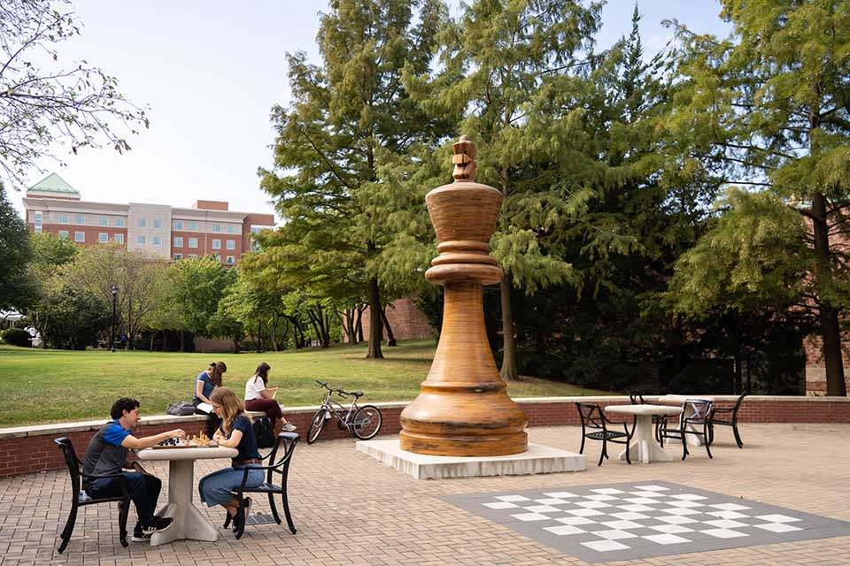
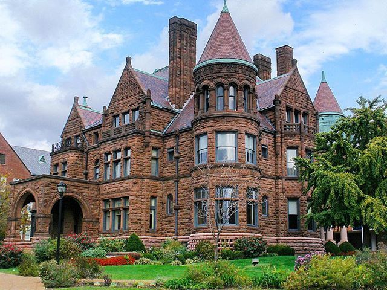
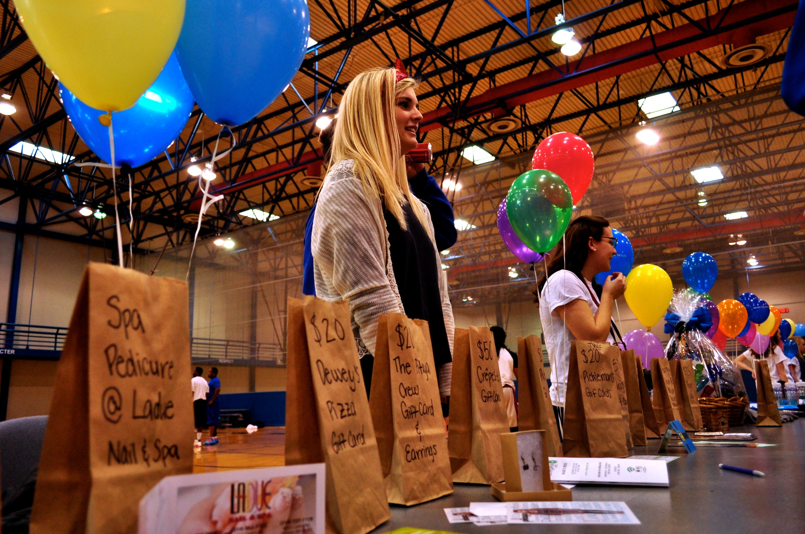

I want to be an active agent in the society. With this goal I dedicated myself to help other people: mothers, children and people with disabilities. I teach chess toward needy children in state of Londrina in Paraná through Chess club of Londrina and I would like to continue teaching it through chess club of Saint Louis University. This project of teaching chess to children is important to demonstrate that chess is not an aristocratic sport, but a sport for all; everyone has rights to exercise the brain through tactics and strategy. "Nothing is as medicinal as the human touch." –Fischer, Bobby.
To help mother with their children I developed a free mobile application about Pediatrics. Joining the Math and computing science club would help me to improve my programming skills, which I would use to update the app with new tips and new functions to help mothers with their newborn children.
I want to be a medical physic, and I intend to help and bring hope to children. Therefore, it would be an honor to be part of the program SLU wishmakers, to care for and learn from children, receive experience in a hospital, learn new topics about pediatrics, and see many smiles.
About physics, I imagine how beautiful and well equipped Saint Louis University’s Department of Physics and how great it would be to have classes with Professor Dr. Greg Comer he has areas of interest close to mine, such as Nuclear and particle physics and would be terrific learn even more this topics with him. I also wonder SLU Research Institute and the physicals that work there.
Besides physics classes, I ’am aiming to learn history and theology. Therefore, the Historical Samuel Cupples House and Galery is a good place to visit.
characteristics that I admire in SLU
-

Love for chess
A university that knows the importance of chess is certainly an excellent university.
-

history samuel cupples house and gallery
A historic mansion from 1888.
Hosts art exhibitions of SLU students and faculty, as well as visiting artists
-

Ph.D. Greg Comer
Director of the Center for Fluids at All Scales.
Faculty Advisor to the Saint Louis University Society of Physics Students.
I have a lot to learn from this doctor.
-

Department of Physics
Beautiful study center, with people very skilled and ready to offer the best of themselves.
-

SLU Wishmakers
This is a program that made me happy only to know of its existence, students who voluntarily raise funds to help and raise awareness of others.